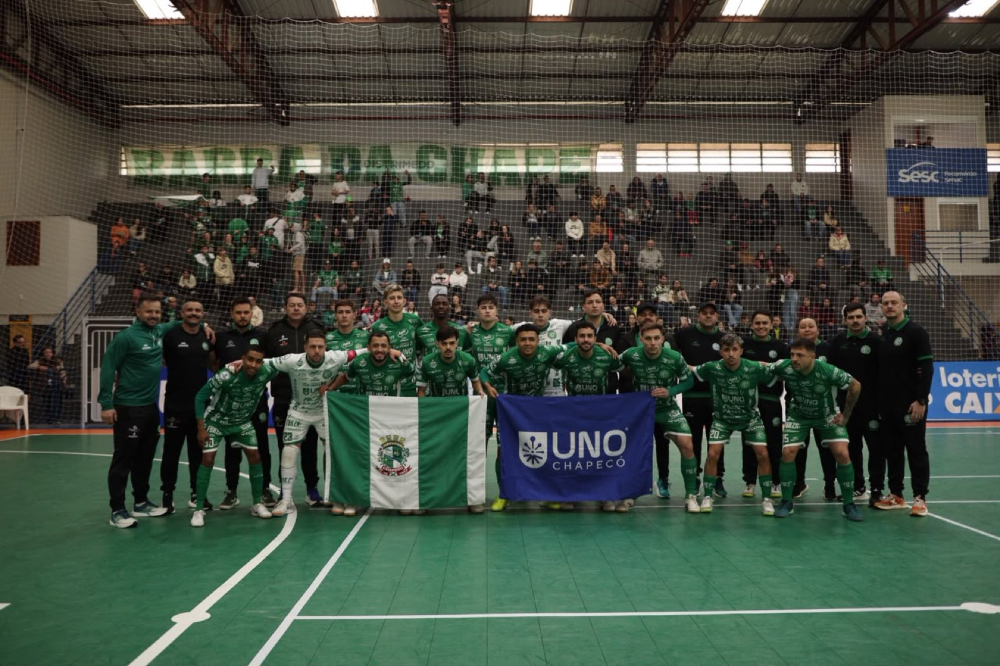
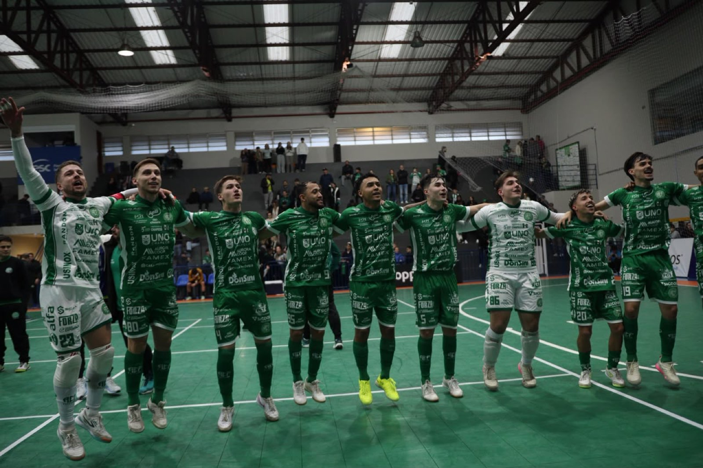

Representando o município, a equipe Prefeitura de Chapecó/Chapecoense/Unochapecó começa a disputa por uma das três vagas oferecidas à fase regional dos Jogos Abertos de Santa Catarina. O micro será em São Carlos. Confira a tabela de jogos do Verdão das Quadras no grupo C:

São 16 cidades, divididas em quatro grupos, com os dois primeiros times de cada avançando à etapa eliminatória. Os três melhores do microrregional garantem a classificação ao regional.

Atletas convocados para a estreia no micro
Goleiros: Alê Falcone e Dudu
Fixo: Tutu
Alas: Davi, Douglinhas, Eduardo, Fael, Kassula, Lucas, Mano, Maranhão e Vini Lima
Pivôs: João Seco e Mateus
Crédito das fotos: @rogersilva_fotografia/@achapefutsal